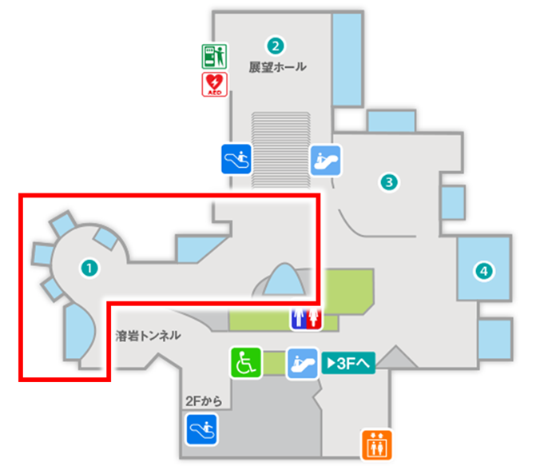

春になると産卵のために沿岸にやってくる魚です。
錦江湾では大型のマダイが集まり、「入りダイ」と呼ばれて親しまれています。
春は錦江湾に多くのマダイが集まり、釣り人でにぎわいます。
（飼育員 ゆっきー）
錦江湾など水深30〜50mの沿岸
Q1：マダイがたくさん集まるのはいつ？
Q2：「入りダイ」とはどんなマダイ？
鯛は「めでたい魚」として祝い事にもよく使われます。
錦江湾（鹿児島湾）を中心に鹿児島県本土周辺の海にくらす生きものを展示しています。 亜熱帯と温帯の境界にあたるこの海域では、亜熱帯のサンゴ礁のようなサンゴ群生地や、温帯特有の藻場など多様な環境が見られます。また、錦江湾は内湾としてはめずらしい２００ｍを超える水深があり、独特な生態系を持っています。
